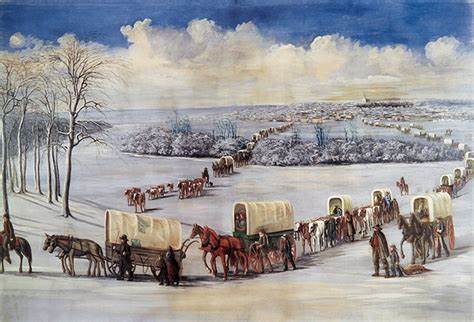

More Internal Conflict
After a few years living in Nauvoo the saints were doing very well. The church had grown, and the city was one of the largest in the state of Illinois. A man named John C. Bennet had come to the city and helped the saints achieve the success they were having. John proclaimed to be a good and virtuous man, but this was a lie. He began to live a very immoral life and claimed he had permission from Joseph Smith to do what he was doing. When Joseph learned of his actions and lies he decided it would be best to excommunicate John and strip him of his leadership role in the city of Nauvoo.
This made John very angry. He went to a nearby town and sent bitter letters to a popular newspaper berating Joseph and the saints. In these letters he claimed that Joseph was practicing a perverse form of polygamy where he and other leaders of the church could pretty much do anything they wanted with any woman of the city. He also told the newspaper that Joseph was behind a recent assassination attempt against the old Governor of Missouri, Lilburn Boggs. These lies started a fire among the critics of the church. They wanted Joseph to be put in jail. Men were sent to arrest Joseph, but he hid himself from these officers to evade this unjust capture. Eventually Joseph was captured, but the judge declared that the claims were invalid, and Joseph was released. This happened several times over the next few years as internal and external opposition to Joseph Smith rose.
The Martyrdom
The last few months of Joseph’s life were a very tense time for him. Many of his friends and family had turned against him because of his practice of polygamy among other reasons. He knew that some of these people wanted to kill him. Some other leaders of the church claimed that Joseph was a fallen prophet. William Law and the Higbee brothers were front and center in these claims of Joseph’s fall. These men began to have secret meetings to conspire about what to do. They wanted to form a new church as well as overthrow the prophet. Two young men, Denison and Robert, went to some of these secret meetings and learned that the group planned on killing Joseph Smith. These two brave boys were nearly killed, but they escaped and warned Joseph of the secret combination.
William law started a new newspaper, the Nauvoo Expositor, which sought to expose the “vicious principles” of Joseph Smith. In the paper they wrote about how Joseph Smith had fallen from the grace of God and needed to be removed from his place as President of the church. Joseph knew that this paper would have a violent effect if it was allowed to proceed. The City Council of Nauvoo met and decided to destroy the printing press. This act of defiance led to a cry of outrage. Thomas Sharp, an opponent of the church in a neighboring town wrote, “War and extermination is inevitable…We have no time for comment, every man will make his own. Let it be made with powder and ball!!!”
Although the leaders of the city of Nauvoo had the right to destroy the press for being a nuisance, there was an outrage because of it. The people of the state of Illinois had had enough. They wanted Joseph Smith to face justice for his actions. Joseph Smith knew that if he was imprisoned, he would be killed. He tried to run away but was criticized for leaving the saints defenseless. He returned with Hyrum, and together they went to Carthage like lambs to the slaughter. As they were escorted to Carthage jail they walked past mobs of men who threatened to kill Joseph. Governor Ford promised that Joseph would be protected in the jail, but this was not the case. A great mob of men with their faces painted black came and surrounded the jail. After a fight Hyrum and Joseph Smith were both killed. Their companions were miraculously spared and lived on to preach the gospel and lead the church. After the death of Joseph Smith, the church persevered. Brigham Young lead the saints to the west. The persecution the saints had overcome prepared them to cross the plains and start a new civilization. Persecution is awful. It hurts to go through trials. Like Joseph Smith and the early members of the Church of Jesus Christ of Latter-day Saints we can overcome these trials and be better for it.
 Following Brigham Westward